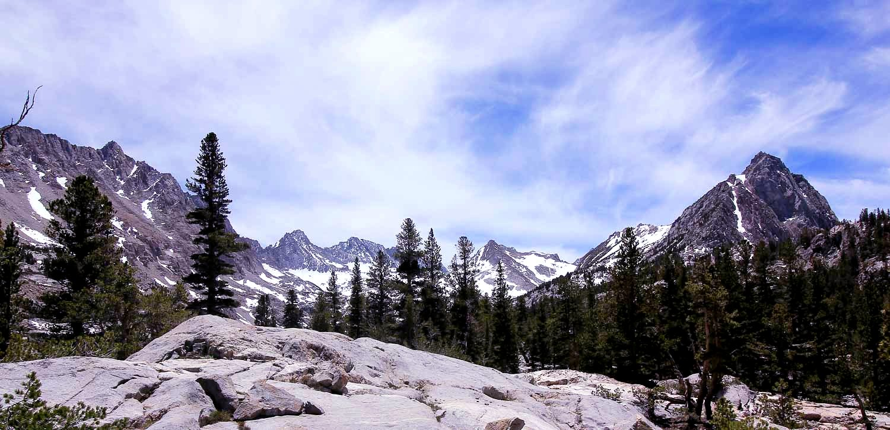

Sabrina Basin - June 2016
A late shoulder season trip, lots of snow and stuff...
As usual, the planned route was so much harder than what we actually did (this seems to be a trend...), here is the route we took: Caltopo
We began at Lake Sabrina and hiked all the way to just short of Echo Lake, just at the base of Picture Peak. Some amazing views of Mt. Haeckel, Picture Peak, Mt. Darwin, ...

Trailhead

Lake Sabrina


Mt. Darwin

{kind=link}
Near Blue Lake

Mt. Haeckel
{kind=link}
Picture Peak

Above Hungry Packer Lake
{kind=link}
Moonlight Lake

Mt. Powell and Point Powell
So we camped on the ridge between Hungry Packer and Moonlight Lakes that night, and we could see Echo Lake still frozen. Originally, we were going to cross Echo Col and hit the John Muir Trail, but we couldn't because there was a lot more snow than we thought. We didn't have crampons or ice axes.

The next morning

Since we had to turn back, we extended our trip a night by camping at Blue Lake for one extra night. Then we left the next day.